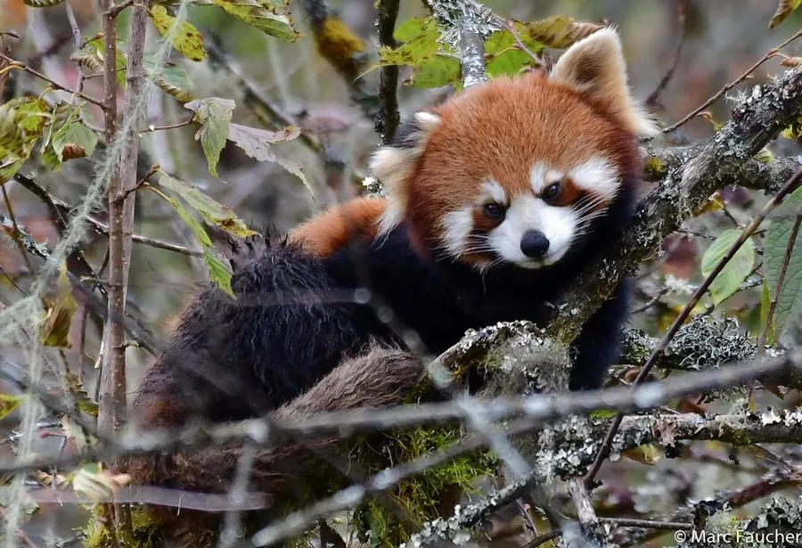

哺乳动物 · 动物界
小熊猫 Ailurus fulgens

全身栗红色、尾带环纹的小型食肉动物，以竹叶为食，擅长攀树，生活在喜马拉雅山东缘的冷凉山地森林中。
- 分类
- 门脊索动物门纲哺乳纲目食肉目科小熊猫科属小熊猫属
- 栖息环境
- 海拔 2200–4800 米的冷凉山地竹林与针阔混交林，喜湿润多雾环境
- 地理分布
- 尼泊尔、不丹、印度北部及中国四川、云南、西藏的山地
- 保护级别
- IUCN 濒危（EN）；中国国家二级保护动物
物种志
小熊猫体长约 50–64 cm，尾长 28–50 cm，体重 3–6 kg，全身覆栗红色长毛，四肢和腹部偏黑，尾上约有 9 个深浅相间的环纹。它脸圆耳大、鼻吻较短，前掌同样有特化的腕骨，可以灵活抓握竹枝，是少数能直立起身观察四周的小型食肉动物。
小熊猫栖息于海拔 2200–4800 米的冷凉山地竹林与针阔混交林，主食竹叶、竹笋，也吃果实、花蜜、鸟卵和昆虫。它多在晨昏和夜间活动，白天蜷在树杈上或岩洞中休息，冬季用蓬松的尾巴裹住口鼻保暖。除繁殖季节外基本独居，每年春季发情，妊娠期约 4 个月，每胎 1–3 仔。栖息地破碎化、盗猎和犬瘟热是主要威胁，全球野生种群估计不足 1 万只，分布于尼泊尔、不丹、印度和中国的喜马拉雅山东缘。
形态与习性
- 食性以竹叶、竹笋为主，也吃果实、花蜜与昆虫
- 体长50–64 cm，尾长 28–50 cm
- 体重3–6 kg
- 寿命野外约 8–10 年，圈养可达 15 年
- 繁殖春季发情，妊娠期约 4 个月，每胎 1–3 仔
- 活动节律晨昏与夜间活动，白天多在树上休息
趣味知识
- 小熊猫也有“伪拇指”，由腕部籽骨特化，用来抓握竹枝。
- 天冷时它会用蓬松的长尾裹住口鼻，像围巾一样保暖。
- 小熊猫曾长期被归入浣熊科，如今独立为小熊猫科。
- 它标志性的“举手”动作其实是站立观察四周，或是示威。